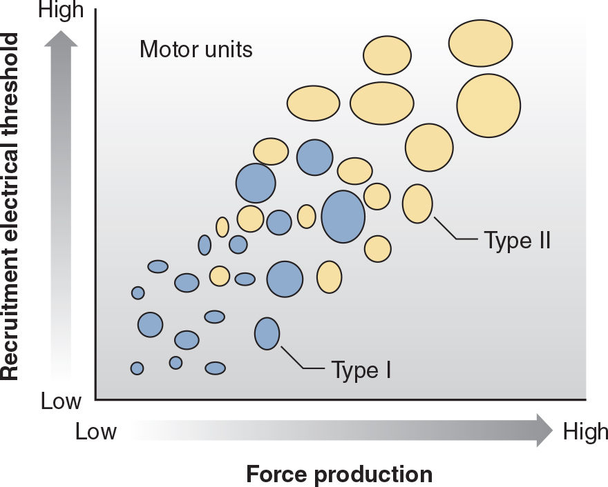

Adaptations to Anaerobic Training(僅供術語對照) | 原文頁碼 p281–p338
阻力、衝刺、增強式這類無氧訓練,先改神經(動員更多、放電更快、抑制更少),再改肌肉、骨骼、肌腱的結構,停訓後,這些適應會以相似的順序逐一消退。
無氧訓練(anaerobic training)是高強度、間歇性的運動,身體再生三磷酸腺苷(adenosine triphosphate, ATP)的速度必須快於單純氧化代謝的供應速度,能量主要來自磷酸原系統,醣解只佔較小比例。阻力訓練、增強式訓練、速度敏捷訓練、間歇訓練皆屬此類。衝刺與增強式練習主要以磷酸原系統供能:單次通常不到10秒,組間休息約5到7分鐘,讓能量接近完全恢復,維持動作品質。時間更長、強度更高的間歇訓練則主要依賴醣解系統,休息壓縮到20到60秒。氧化代謝在高強度期間角色有限,但恢復期與休息期仍要靠它補回能量儲備。
運動單元由一個α運動神經元和它支配的全部肌纖維組成。控制精細動作的小肌肉,一個運動單元可能支配不到10根纖維,軀幹與四肢的大肌肉可超過100根。發力大小隻由兩個變數控制:調動多少運動單元(動員),以及每個單元放電多快(放電頻率)。放電越快,肌纖維還未完全放鬆就再次興奮,相連的抽搐疊加,收縮力更強。未經訓練者全力收縮時,只能動用約71%的肌肉組織;傷後復健期間,電刺激比自主收縮更能促進力量增長。運動單元一經動員,再次動員所需的突觸輸入就會減少,門檻因此降低;這是受訓者更容易「點火」的原因之一。爆發性或彈道式收縮時,單元按精確的順序快速啟動,多數在力量輸出顯著上升前就已加入,且優先調用高閾值單元。
動員順序服從亨內曼大小原則(size principle):按神經元胞體大小升序,胞體小、閾值低的先啟動;胞體大、閾值高的後啟動。高閾值單元收縮力強但易疲勞,其典型放電頻率與動員閾值成反比。這樣的安排有利於低力量輸出時的精細調節,也更抗疲勞。此外,較小的肌肉更依賴提高放電頻率來增幅力量,較大的肌肉更依賴動員;訓練後可能出現多個單元以固定間隔同步放電的樣式,同步性對力量發展速率(rate of force development, RFD)更關鍵,對最大力量總值影響較小。
交叉教育(cross education)指只練一側,對側未練肢體的力量也會上升:訓練4到12週後未練肢體力量最多增加約22%,平均約8%,此時肌電圖(electromyography, EMG)活動增強,肌肉橫截面積(cross-sectional area, CSA)卻未增加,證明這是中樞學習而非肌肉成長。效應與負荷有關:對側以8RM至12RM的大負荷訓練才會出現明顯遷移;未練側只做30RM至40RM輕負荷、訓練側做大負荷,也有遷移;訓練側若只做30RM至40RM傳統輕負荷,遷移就消失。
雙側缺陷(bilateral deficit)見於未經訓練者:雙側同時收縮的力小於兩側單側收縮力之和,對應的EMG活性也更低,說明這來自神經機制的限制;長期雙側訓練會消除這個現象,訓練有素者甚至出現雙側促進(bilateral facilitation),即在雙側動作中主動肌的自主激活更高。
拮抗肌共同激活(co-activation)多數時候是保護關節的機制,但過度激活會侵蝕淨力輸出。阻力訓練後拮抗肌共同激活減少,淨力增加,而主動肌動員並未上升。不穩定表面會完全扭轉上述效果:坐在瑞士球上做腿伸展,股四頭肌激活比穩定狀態低44%,膕旁肌激活高29%,腿部伸展力低70%;不穩定深蹲的1RM、峯值力與RFD也顯著下降。對已有高強度訓練經驗的人而言,中等不穩定器械(瑞士球、平衡板)引起的肌肉激活變化並不明顯。
無氧訓練能增強牽張反射(stretch reflex,肌緊張反射)的反應幅度:研究顯示阻力訓練可把反射增強作用提高19%到55%,舉重與健美選手的比目魚肌反射增強比未訓練者更強,訓練還能利用串聯彈性成分的被動彈性。動物與活檢研究皆觀察到,訓練後神經肌肉接頭(neuromuscular junction, NMJ)總面積、運動終板周長與面積增加,乙醯膽鹼受體分佈更分散,也就是神經與肌肉之間的「插座」擴大、接觸點增多。
EMG分表面與肌內(針極、細絲電極)兩種;表面式測不到深層肌肉,體脂越多,訊號越弱,因為脂肪相當於低通濾波器。時間軸必背:訓練初期神經適應(動作學習與協調改善)佔主導,肥大不明顯;Sale報告訓練6到10週內神經適應顯著;超過10週後,肌肉結構變化(肥大)對力量與爆發力增長的貢獻超過神經適應;肥大進入平臺期後,加入新的訓練變化或漸進式超負荷(progressive overload)能再度啟動神經適應。神經因素對高強度(大於80% 1RM)計劃的力量增長尤為重要。
肌肉肥大(hypertrophy)指肌纖維CSA增大,與力量提升正相關。機制上,收縮蛋白肌動蛋白(actin)與肌球蛋白(myosin)淨合成增加,新合成的肌絲加到肌原纖維外周,直徑變大。肌肉的機械形變本身就能激活蛋白激酶B(Akt)/標靶雷帕黴素蛋白(mTOR)、腺苷酸活化蛋白激酶(AMPK)與絲裂原活化蛋白激酶(MAPK)通路,其中Akt/mTOR通路與阻力訓練適應的關係最直接;同時肌肉生長抑制素(myostatin)等抑制性生長因子會下調。急性訓練後蛋白質合成率升高,最長持續48小時;合成順序是吸水、非收縮蛋白合成、收縮蛋白合成。運動誘發肌肉損傷(exercise-induced muscle damage, EIMD)在首次訓練後最嚴重,隨訓練進展迅速減輕,持續10週後幾乎消失。
時間數字背牢:快肌球蛋白重鏈(myosin heavy chain, MHC)類型在幾次訓練後就開始改變;CSA則要訓練3到4週、9到12次後才能檢測到顯著變化;肥大反應在早期最大,隨後隨訓練年數增加而減緩。增生(hyperplasia)指肌纖維縱向分裂使纖維數量增加:動物實驗已證實,人類研究結果卻不一致;即便發生,新增組織量也可能不到10%,不是人類肌肉增長的主要策略。
肌纖維分佈在一條連續的氧化性光譜上:IIx、IIax、IIa、IIac、IIc、Ic、I,對應不同的MHC表達(I型與II型的比例部分由遺傳決定)。持續訓練與高閾值單元激活會把IIx沿光譜推向氧化性更強的IIa(先經IIax中間型)。Staron的經典方案(6RM至12RM大重量深蹲、腿舉、膝伸展,組間休息2分鐘,每週2次共8週)顯示:女性訓練2週(4次)後IIx比例已顯著下降,男性4週(8次)後下降;8週內男女IIx皆從約18%降至約7%。去訓練會逆轉這個過程:IIa減少、IIx回升,甚至過度增長。I型與II型之間的跨類別轉換目前證據不足,不能當結論。肥大幅度也分纖維類型:II型纖維尺寸增長通常大於I型,有觀點認為肥大的終極潛力取決於個體II型纖維的相對比例。結構上,阻力訓練可增大羽狀角(pennation angle)與肌束長度,力量選手肱三頭肌與股外肌的羽狀角和肌束長度,都明顯大於未訓練者,這有利於力量傳導。
高強度阻力訓練後粒線體密度(mitochondrial density)下降,但粒線體絕對數量不變或略增;肌肉CSA增長遠快於粒線體增殖,單位面積的密度自然被稀釋。微血管密度同理:不變或下降,但每根纖維對應的微血管數量略增,有助於清除代謝產物。研究已證實,短跑訓練能增強鈣離子釋放,促進橫橋形成,提高速度與爆發力。在乳酸閾值以上的高強度間歇(衝刺、功率車)可把緩衝能力(buffering capacity)顯著提高16%到38%,無氧團隊項目運動員的緩衝能力也高於耐力選手與未訓練者。底物儲備會超量恢復:一項為期5個月、每次3到5組8至10RM、組間休息2分鐘的阻力訓練,使靜息磷酸肌酸(creatine phosphate, CP)濃度增加28%、ATP增加18%;偏重快速醣解的健美式訓練則使肌肝醣最多增加112%。
肌肉收縮經肌腱把彎曲、壓縮、扭轉的力傳到骨,造成骨骼形變。機械負荷讓成骨細胞(osteoblast)遷移到受力表面,分泌以膠原蛋白為主的骨基質,再礦化為羥基磷灰石(hydroxyapatite);新骨主要在骨膜(periosteum)外表面形成,增加骨的直徑與強度。鬆質骨(海綿骨)面積質量比大、密度低,對刺激產生適應的速度快過緻密的皮質骨。最小必要應變(minimum effective strain, MES)是啟動新骨形成的門檻,約為骨折所需力的十分之一;低於MES的力不會引發骨生長;骨變粗後,同樣的力又低於MES,因此負荷必須持續漸進。骨礦物質密度(bone mineral density, BMD)與肌肉力量、質量正相關。在測量方面,雙能量X光吸收法(dual-energy X-ray absorptiometry, DXA)最常用,卻無法觀察微結構;定量電腦斷層掃描(quantitative computed tomography, QCT)能區分皮質骨與鬆質骨。骨骼的規模變化通常需要約6個月或更久。增骨處方:多關節結構性運動(structural exercise)讓軸向力作用於脊柱與髖部(深蹲、高翻、硬舉、抓舉、推舉、肩上推舉),結合大負荷與高衝擊、多方向變化;當負荷大小或速率足夠時,重複次數一般不需超過30到35次,再多對骨骼也沒有額外好處。高衝擊循環負荷(體操、排球、籃球)對增加髖部與脊柱BMD比低衝擊運動有效;青少年精英舉重選手的骨礦化程度遠高於未訓練者,青春期與成年早期是累積峯值骨量(peak bone mass)的窗口。
膠原纖維是結締組織的主體:I型存在於骨、肌腱、韌帶,II型存在於軟骨;成纖維細胞合成前膠原(procollagen,三股螺旋前體),分子間形成的化學交聯(cross-link)纔是強度的真正來源。韌帶另含彈性蛋白以保留關節活動度。肌腱血管稀疏、代謝緩慢,運動時肌肉血流增加並不會帶動肌腱血流,這是肌腱受傷後難以癒合的原因。適應方向:膠原纖維直徑增大、共價交聯增多、纖維數量與堆積密度增加。Kubo報告8週阻力訓練後阿基里斯腱剛度(tendon stiffness,單位伸長所需的力)增加15%到19%;9週膝伸展訓練後髕腱CSA增加5%到6%。負荷強度決定一切:80% 1RM的重負荷會增加肌腱剛度,20% 1RM的輕負荷則無效。軟骨沒有自體血液供應,靠關節活動造成的滑液壓力變化,以擴散方式獲取營養;關節固定會讓軟骨細胞(chondrocyte)死亡、基質吸收。中等強度無氧運動似乎足以增加軟骨厚度;負荷循序漸進時,劇烈運動並不導致退化性關節疾病。
長期訓練讓靜息睪固酮、生長激素、IGF-1、皮質醇慢性升高的證據並不定論;運動中與運動後的短暫升高已足夠刺激受體,長期維持高激素濃度反而會讓受體下調(desensitization),2型糖尿病的胰島素抵抗就是一例;這也解釋了合成代謝類固醇為何要循環用藥,而非恆量給藥。受體本身會變:阻力訓練後48到72小時雄激素受體(androgen receptor, AR)含量上調;但6組10次深蹲這類高訓練量會讓AR在訓練後1小時急性下調,訓練前後攝取蛋白質與碳水化合物可減輕下調(1組深蹲則無AR變化)。心血管方面:短期阻力訓練使靜息心率下降5%到12%,長期結果不一致(無變化或降4%到13%);長期訓練者的靜息心率約為每分鐘60到78次,屬於平均或低於平均。統合分析顯示收縮壓與舒張壓皆降2%到4%,初始血壓越高者越明顯;心率血壓乘積不變或下降。每搏輸出量絕對值隨瘦體重增加而增,除以體表面積或瘦體重後即不再增加。總膽固醇與低密度脂蛋白不變或略降,高密度脂蛋白上升。左心室壁厚度與質量絕對值增加,以體表面積或瘦體重標準化後差異消失;阻力訓練幾乎不改變左心室腔大小或容積,這是有氧訓練的關鍵區別(健美選手的左右心室舒張末期與收縮末期容積高於正常,可能部分來自他們額外進行的有氧訓練)。訓練後,同樣絕對強度的次最大運動引起的心率與血壓反應降低;大負荷、低訓練量的方案通常不提升攝氧率。
將高訓練量或高頻率的有氧耐力訓練加入力量計劃,會干擾力量與爆發力的增長,機制包括有氧疲勞拖累阻力訓練的品質。受損順序要先記:爆發力與RFD比低速力量更早被犧牲。Häkkinen的21週研究中,聯合訓練組與純阻力組的動態、等長力量增長相似,但RFD只在純阻力組提升。Kraemer以女性受試者設計五種訓練條件,進行21週研究:純阻力組的1RM與RFD顯著高於混合組;兩英里跑步成績的進步幅度幾乎相同,沒有出現有氧過度訓練;纖維層面上混合組只有IIa纖維體積增加,純阻力組I、IIc、IIa體積全增,顯示同時訓練在細胞層面存在拮抗;純阻力與混合組的IIx幾乎完全轉為IIa,連只做間歇有氧的組別也有顯著IIx轉換,說明大重量阻力對IIx纖維的動員超過高強度有氧間歇。編排能減輕幹擾:同一堂課內合併兩種訓練、每週3天且兩課之間至少休息一天,所受幹擾較小;Sale的比較顯示,每週4天分開練(2天力量加2天有氧)的腿舉1RM提升25%,高於每週2天合併練的13%。未經訓練者做高強度阻力訓練也能讓最大攝氧量(V̇O2 max)上升5%到8%;對訓練有素者,阻力訓練不損有氧能力,甚至有研究發現,同期訓練者的有氧能力比只做有氧者發展得更好。循環訓練與組間休息30秒以內的高訓練量方案能提高V̇O2 max。
力量漲幅取決於起點:回顧百餘項研究,4週到2年內,未訓練者平均約+40%,中等訓練者約+20%,訓練有素者約+16%,高階約+10%,精英約+2%。功率的最佳負荷另記:深蹲最大功率約在56% 1RM,挺舉約80% 1RM,彈道式臥推投擲(上肢)約46%到62% 臥推1RM;跳躍深蹲的絕對峯值功率在不加外負荷(0% 1RM,即體重)時最大,但受訓的力量型選手在深蹲1RM的30%到60%才達峯值。身體成分:阻力訓練增加瘦組織量與代謝率,體脂率最多可下降9%。動作表現(跑步經濟性、垂直跳、衝刺、投擲與踢擊速度)都能靠阻力訓練改善。
去訓練遵循可逆性原則(reversibility):停訓或訓練量、強度、頻率大幅下降後,適應會部分或完全流失。時間軸:力量表現大約可穩定到4週不活動,但訓練有素者的離心力與專項爆發力更早就會掉;精英舉重選手停訓14天,臥推1RM僅-1.7%、深蹲-0.9%、等長膝伸-7%、等速向心-2.3%、垂直跳-1.2%,皆未達顯著,然而同期間快肌纖維CSA已降6.4%(Hortobagyi)。休閒訓練者前6週幾乎無變化。8到12週不活動時,力量降幅限制在7%到12%;再往後,快慢纖維CSA與肌肉量一起下滑。早期力量下降伴隨EMG下降,先以神經機制為主,之後萎縮才占上風。恢復訓練後力量回升快於初學者,支持肌肉記憶(muscle memory)理論。停訓也會反轉纖維轉換:IIa轉回IIx,IIx比例可回升甚至超調。
| 中文術語 | English | 一句話定義 |
|---|---|---|
| 無氧訓練 | anaerobic training | 以磷酸原與醣解系統快速再生ATP的高強度間歇訓練。 |
| 運動單元 | motor unit | 一個α運動神經元及其支配的全部肌纖維,神經肌肉功能的基本單位。 |
| 亨內曼大小原則 | size principle | 運動單元依胞體大小由小到大、閾值由低到高順序動員。 |
| 肌電圖 | electromyography (EMG) | 記錄骨骼肌神經激活強度,分表面式與肌內式。 |
| 神經肌肉接頭 | neuromuscular junction (NMJ) | 運動神經元與肌纖維之間的訊號傳遞連接處。 |
| 牽張反射(肌緊張反射) | stretch reflex / myotatic reflex | 肌肉被拉長時誘發的反射性收縮,訓練可使其增強19%~55%。 |
| 交叉教育 | cross education | 單側訓練使未訓練對側肢體力量增加的中樞神經現象。 |
| 雙側缺陷 | bilateral deficit | 雙側同時收縮的力小於兩側單側收縮力之和,未訓練者常見。 |
| 肌肉肥大 | hypertrophy | 肌纖維橫截面積增大,是人類肌肉增長的主要機制。 |
| 增生 | hyperplasia | 肌纖維縱向分裂導致纖維數量增加,人類是否存在仍有爭議。 |
| 橫截面積 | cross-sectional area (CSA) | 肌纖維橫切面的面積,肥大的測量指標。 |
| 羽狀角 | pennation angle | 肌束相對於肌腱的傾斜角,訓練可增大以利沉積更多收縮蛋白。 |
| 運動誘發肌肉損傷 | exercise-induced muscle damage (EIMD) | 訓練造成的肌纖維結構損傷,首次訓練後最顯著。 |
| 最小必要應變 | minimum effective strain (MES) | 啟動新骨形成的應變門檻,約為骨折所需力的1/10。 |
| 骨礦物質密度 | bone mineral density (BMD) | 骨骼特定區域沉積的礦物質質量,與肌力、肌量正相關。 |
| 成骨細胞 | osteoblast | 遷移至受力面分泌骨基質、負責新骨形成的細胞。 |
| 結構性運動 | structural exercise | 使軸向力作用於脊柱與髖部的多關節大負荷動作。 |
| 肌腱剛度 | tendon stiffness | 肌腱每單位伸長所需的力,重負荷訓練可增加。 |
| 肌球蛋白重鏈 | myosin heavy chain (MHC) | 決定肌纖維ATPase類型的蛋白,訓練時IIx型MHC向IIa型MHC轉換。 |
| 去訓練 | detraining | 停訓或訓練量大幅下降後適應流失,符合可逆性原則。 |

| Kraemer同期訓練研究組別(21週) | 訓練前IIx型% | 訓練後IIx型% | 纖維體積變化 |
|---|---|---|---|
| S組(純阻力) | 19.1%±7.9% | 1.9%±0.8% | I、IIc、IIa型纖維體積全增 |
| C組(同側同期:阻力+有氧) | 14.11%±7.2% | 1.6%±0.8% | 僅IIa型纖維體積增加(細胞層拮抗) |
| UC組(上肢阻力+有氧) | 22.6%±4.9% | 11.6%±5.3% | 力量/RFD增長顯著低於S組 |
| E組(純有氧) | 19.2%±3.6% | 8.8%±4.4% | 另見<3%的IIa轉IIc;I與IIc體積縮小 |
| Staron方案(8週大重量) | 約18% | 約7% | 女性2週、男性4週後IIx已顯著下降 |
| 去訓練時間窗 | 發生什麼 |
|---|---|
| ≤4週不活動 | 力量表現大體穩定;訓練有素者的離心力與專項爆發力可能更早下滑。 |
| 14天(精英舉重選手) | 臥推1RM -1.7%、深蹲-0.9%、等長膝伸-7%、等速向心-2.3%、垂直跳-1.2%,皆未達顯著;但快肌纖維CSA已降6.4%。 |
| 前6週(休閒訓練者) | 幾乎沒有可測變化。 |
| 8~12週 | 力量下降7%~12%;快、慢纖維CSA與肌肉量齊降;IIx比例回升甚至超調。 |
| 恢復訓練後 | 力量回升比初學者快,支持肌肉記憶理論;早期流失以神經因素(EMG下降)為主,後期萎縮占上風。 |
| 動作 | 最大功率輸出負荷 | 備考 |
|---|---|---|
| 跳躍深蹲(絕對峯值功率) | 0% 1RM(僅體重) | 受訓力量型選手在深蹲1RM的30%~60%才達峯值 |
| 背蹲 | 56% 1RM | 下肢大肌羣 |
| 挺舉 | 80% 1RM | 專項技術動作峯值負荷更高 |
| 彈道式臥推投擲(上肢) | 臥推1RM的46%~62% | 上肢峯值功率訓練參考區間 |
Q1.(是非題)訓練最初幾週的力量增長,主要來自可檢測的肌肉肥大。
Q2.(選擇題)觸發新骨形成的最小必要應變(MES)約為骨折所需力的多少?(A)1/2 (B)1/5 (C)1/10 (D)1/15
Q3.(選擇題)交叉教育下,未訓練肢體力量增幅最多可達約多少?(A)8% (B)15% (C)22% (D)35%
Q4.(是非題)高強度阻力訓練會使肌纖維內的粒線體數量減少。
Q5.(是非題)去訓練會使IIa型纖維轉回IIx型,IIx比例可能回升甚至超過訓練前。
Q6.(選擇題)能產生最大功率輸出的深蹲負荷約為多少1RM?(A)30% (B)56% (C)80% (D)95%
Q7.(是非題)同期進行阻力與有氧耐力訓練時,最先受損的是低速最大力量,爆發力幾乎不受影響。
Q8.(選擇題)依百餘研究的回顧,4週至2年訓練的力量平均漲幅,下列配對正確的是?(A)未訓練約20% (B)訓練有素約16% (C)高階約20% (D)精英約10%
Q9.(選擇題)阻力訓練對靜息血壓的長期影響,統合分析顯示?(A)收縮壓與舒張壓皆降2%~4% (B)皆降10%~15% (C)完全無變化 (D)收縮升、舒張降
Q10.(是非題)訓練有素的舉重選手停訓14天後,深蹲1RM已顯著下降。
先把上一節題目做完,再回頭對照本頁。
1. Q1.(是非題)訓練最初幾週的力量增長,主要來自可檢測的肌肉肥大。 …
Ans:✕ — CSA要3到4週(9到12次)才測得出變化,6到10週內以神經適應為主導。
2. Q2.(選擇題)觸發新骨形成的最小必要應變(MES)約為骨折所需力的多少?(A) …
Ans:C — MES約為骨折力的十分之一,低於門檻骨不長。
3. Q3.(選擇題)交叉教育下,未訓練肢體力量增幅最多可達約多少?(A)8% (B) …
Ans:C — 4到12週最多約+22%,平均約+8%;8%是平均值不是上限。
4. Q4.(是非題)高強度阻力訓練會使肌纖維內的粒線體數量減少。 …
Ans:✕ — 數量不變或略增;密度下降是肌肉CSA不成比例增長造成的稀釋。
5. Q5.(是非題)去訓練會使IIa型纖維轉回IIx型,IIx比例可能回升甚至超過訓 …
Ans:○ — 停訓反轉訓練期的纖維轉換,教材明載IIx可出現過度增長。
6. Q6.(選擇題)能產生最大功率輸出的深蹲負荷約為多少1RM?(A)30% (B) …
Ans:B — 深蹲峯值功率約56% 1RM;80%是挺舉的數字。
7. Q7.(是非題)同期進行阻力與有氧耐力訓練時,最先受損的是低速最大力量,爆發力幾 …
Ans:✕ — 爆發力與RFD先被幹擾(21週研究中RFD只在純阻力組提升),力量增長兩組相似。
8. Q8.(選擇題)依百餘研究的回顧,4週至2年訓練的力量平均漲幅,下列配對正確的是 …
Ans:B — 正確序列為40%/20%/16%/10%/2%;高階約10%、精英約2%。
9. Q9.(選擇題)阻力訓練對靜息血壓的長期影響,統合分析顯示?(A)收縮壓與舒張壓 …
Ans:A — 兩者皆降2%~4%,初始血壓較高者反應更明顯。
10. Q10.(是非題)訓練有素的舉重選手停訓14天後,深蹲1RM已顯著下降。 …
Ans:✕ — 深蹲1RM僅-0.9%、未達顯著,但同期快肌纖維CSA已降6.4%,結構先退、表現後掉。